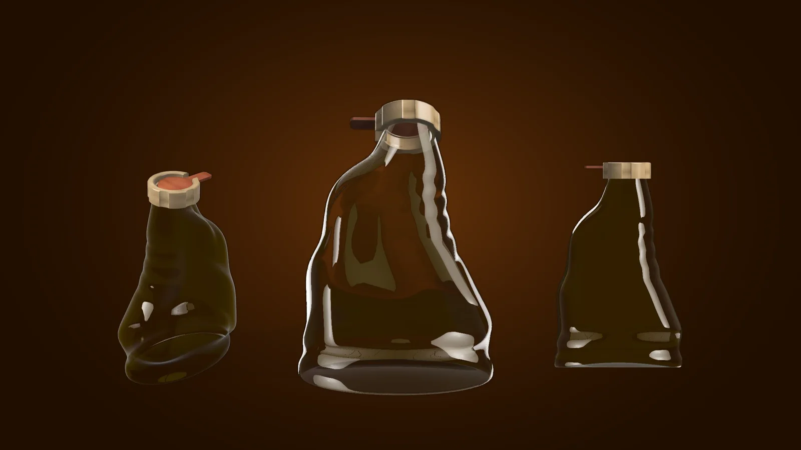
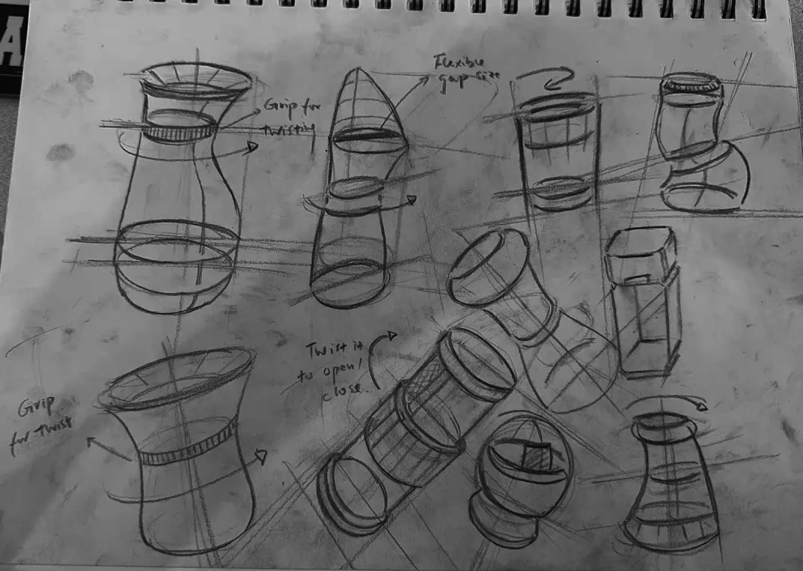
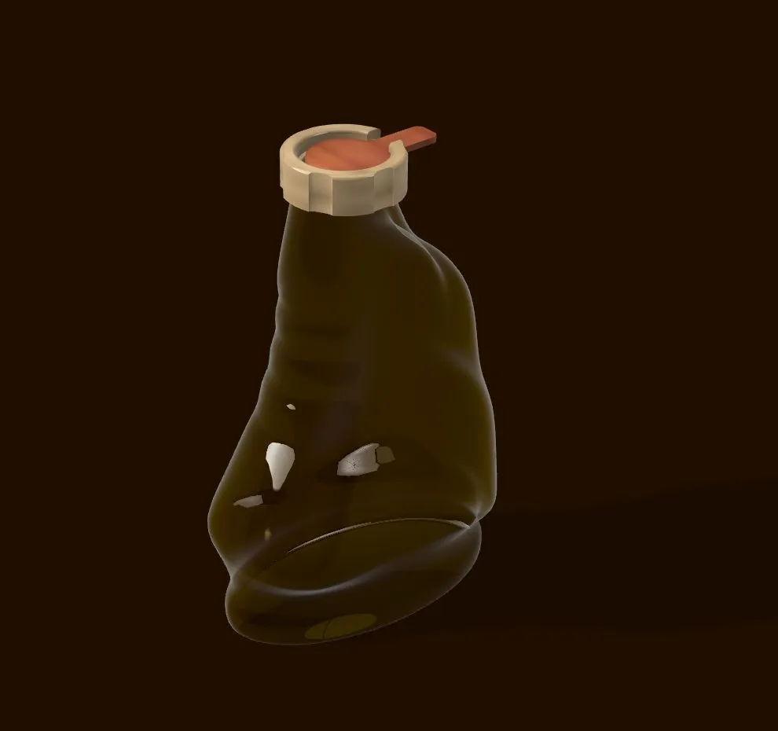
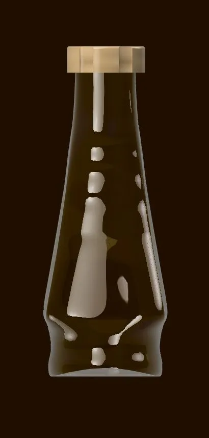
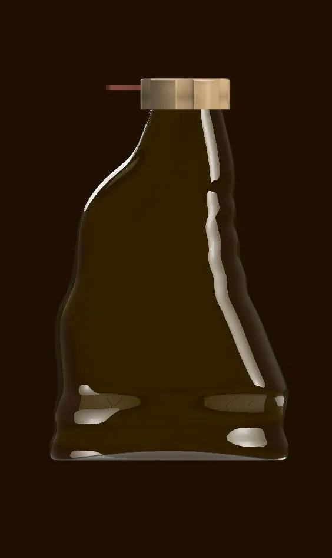
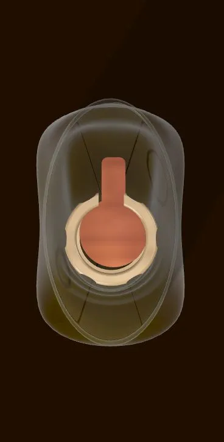
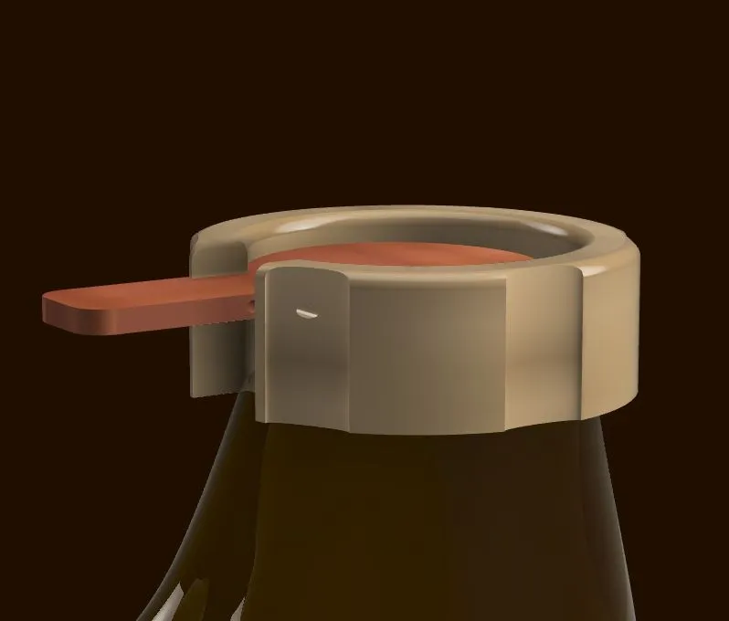
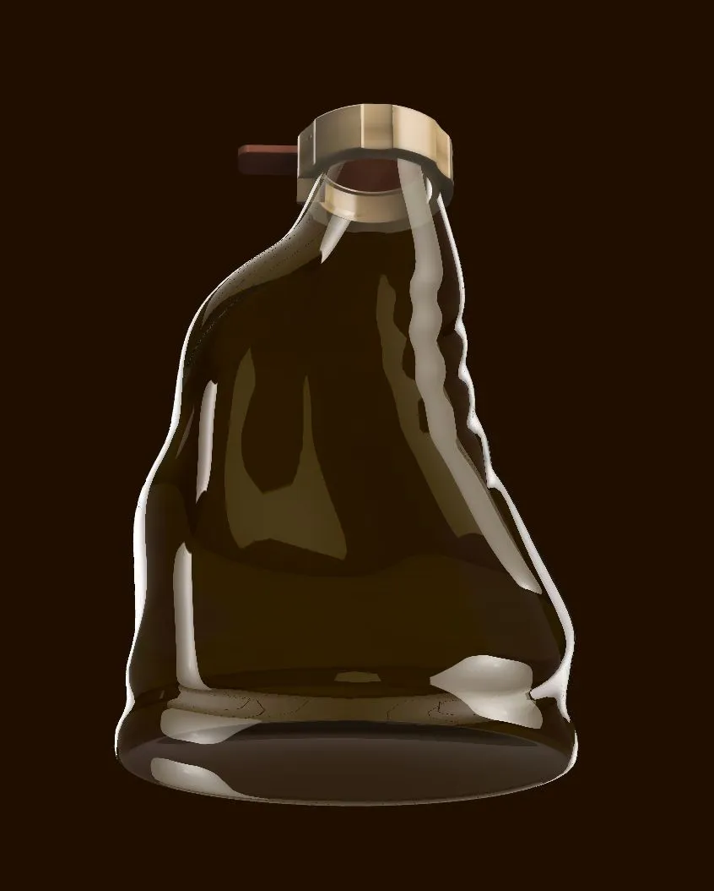
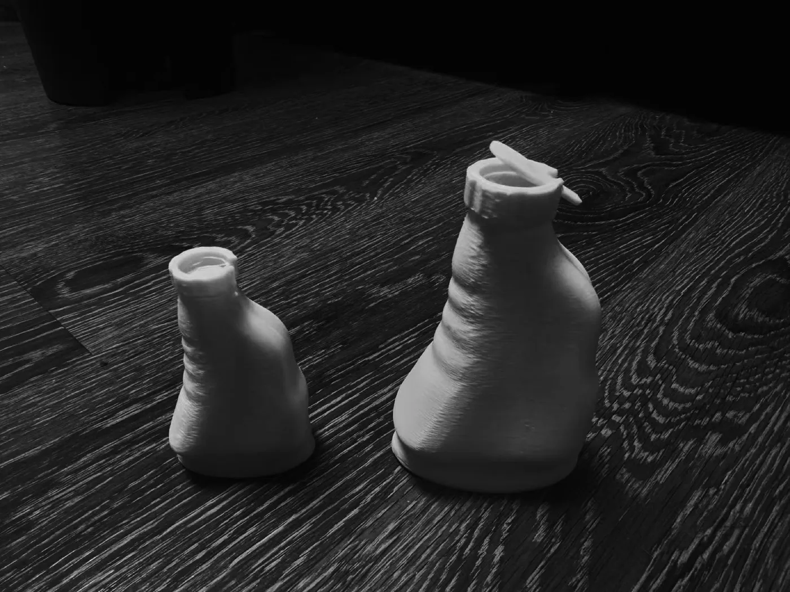
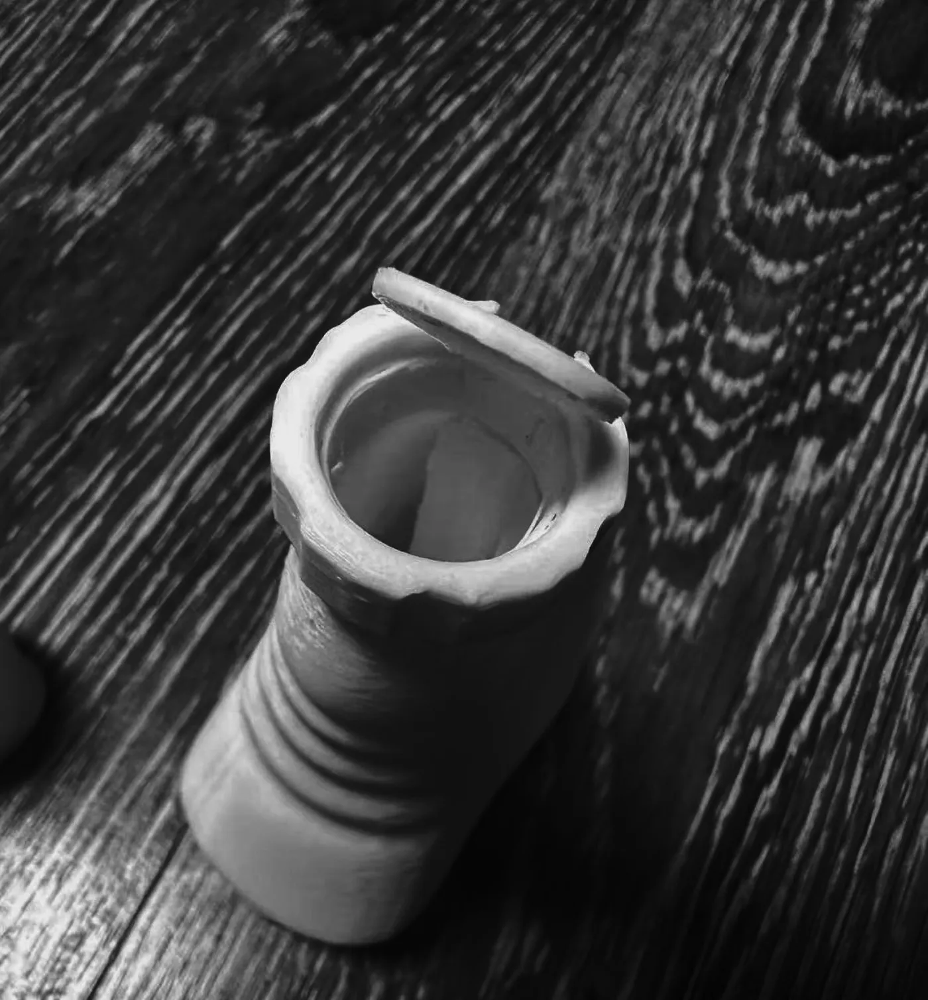

OneFlip: A Handy Spice Jar

A spice jar you can open and pour with one hand, so the other hand never has to leave the pan.
I built OneFlip with Harry Ye and Brian Khuu in ENTR 390 (3D Printing). We designed, iterated on and fabricated a spice container that lets you reach, open and pour with a single hand. It won Best Design at the University of Michigan's Thunderdome Innovation Contest.
Two hands, all the time
Imagine you're cooking dinner: beef and veggies in the pan, spatula in one hand, the pan in the other. Then you need a seasoning right now, before the meat overcooks. Most ingredient containers need two hands at every step.
OneFlip merges the "hold" and "open" steps into one single-handed motion, so the other hand stays free to stir.
Who struggles with jars
We did desk research on how people use everyday kitchen items, with a focus on older adults. One study of 750 adults aged 20 to 94 found this among people over 50:
OneFlip aims for an "easy to open for almost everyone" zone, using grip, leverage and a one-hand design instead of brute force.
Many shapes on paper
We sketched many forms that could support single-hand control before settling on an organic bottle with a flip-trigger cap.

Four views of the final form




Ergonomics

- Grip regionCreates more stable contact with four fingers while holding.
- Sloped backA slight inward curve gives the thumb a natural place to rest.
- Well-positioned triggerWhen you hold it correctly, the flip trigger falls right within thumb range.
- Force-saving leverAn extended pressing region opens the cap with minimal pressure.
Appearance
- Organic formA curved, smooth surface that's safe to grab without full attention.
- TransparencyYou can always see how much spice is left.
- Heavier bottomA larger contact area keeps stacked jars from tipping over in the kitchen.
- Three componentsEasy to assemble and cheap to produce.

Printed, tested, printed again
We printed several iterations with FDM, refining the dimensions and structure each time. OneFlip 2.0, the competition version:


Presentation deck
Can't see the embed? Open the PDF →
Stack
CAD (Fusion 360) · FDM 3D printing · Iterative prototyping · Ergonomic user research